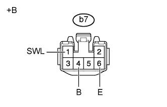
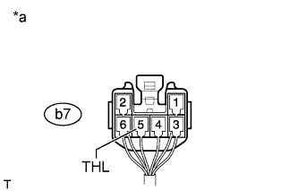
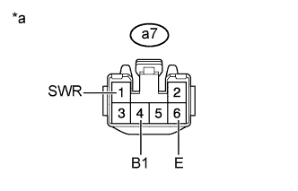
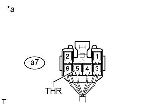

СИСТЕМА ПОДОГРЕВА СИДЕНИЙ > ПРОВЕРКА БЕЗ СНЯТИЯ С АВТОМОБИЛЯ |
| 1. ПРОВЕРЬТЕ БЛОК УПРАВЛЕНИЯ ПОДОГРЕВАТЕЛЕМ ЛЕВОГО СИДЕНЬЯ В СБОРЕ |
|  |
Отсоедините разъем b7 блока управления подогревателем.
Измерьте сопротивление в соответствии со значениями, приведенными в таблице ниже.
| Контакты для подключения диагностического прибора | Состояние | Заданные условия |
| b7-6 (E) - масса | Всегда | Менее 1 Ом |
Измерьте напряжение в соответствии со значениями, приведенными в таблице.
| Контакты для подключения диагностического прибора | Положение переключателя | Заданные условия |
| b7-1 (SWL) - b7-6 (E) | Зажигание включено Переключатель подогревателя левого сиденья выключен | Менее 1 В |
| Зажигание включено Переключатель подогревателя левого сиденья включен | 11–14 В | |
| b7-4 (B) - b7-6 (E) | Зажигание выключено | Менее 1 В |
| Зажигание включено | 11–14 В |
| *a | Вид спереди разъема со стороны жгута проводов: (к блоку управления подогревателем левого сиденья в сборе) |
Подсоедините разъем b7 блока управления подогревателем.
|  |
Измерьте напряжение в соответствии со значениями, приведенными в таблице.
| Контакты для подключения диагностического прибора | Положение переключателя | Заданные условия |
| b7-5 (THL) - масса | Зажигание включено Переключатель подогревателя левого сиденья включен, MIN → MAX | Постепенное увеличение от уровня ниже 1 В до 11-14 В |
| *a | Устройство с подсоединенным жгутом проводов (блок управления подогревателем левого сиденья в сборе) |
| 2. ПРОВЕРЬТЕ БЛОК УПРАВЛЕНИЯ ПОДОГРЕВАТЕЛЕМ ПРАВОГО СИДЕНЬЯ В СБОРЕ |
|  |
Отсоедините разъем a7 блока управления подогревателем.
Измерьте сопротивление в соответствии со значениями, приведенными в таблице ниже.
| Контакты для подключения диагностического прибора | Условие | Заданные условия |
| a7-6 (E) - масса | Всегда | Менее 1 Ом |
Измерьте напряжение в соответствии со значениями, приведенными в таблице.
| Контакты для подключения диагностического прибора | Положение переключателя | Заданные условия |
| a7-1 (SWR) - a7-6 (E) | Зажигание включено Переключатель подогревателя правого сиденья выключен | Менее 1 В |
| Зажигание включено Переключатель подогревателя правого сиденья включен | 11-14 В | |
| a7-4 (B1) - a7-6 (E) | Зажигание выключено | Менее 1 В |
| Зажигание включено | 11-14 В |
| *a | Вид спереди разъема со стороны жгута проводов: (к блоку управления подогревателем правого сиденья в сборе) |
Подсоедините разъем a7 блока управления подогревателем.
|  |
Измерьте напряжение в соответствии со значениями, приведенными в таблице.
| Контакты для подключения диагностического прибора | Положение переключателя | Заданные условия |
| a7-5 (THR) - масса | Зажигание включено Переключатель подогревателя правого сиденья включен, MIN → MAX | Постепенное увеличение от уровня ниже 1 В до 11-14 В |
| *a | Устройство с подсоединенным жгутом проводов (блок управления подогревателем правого сиденья в сборе) |